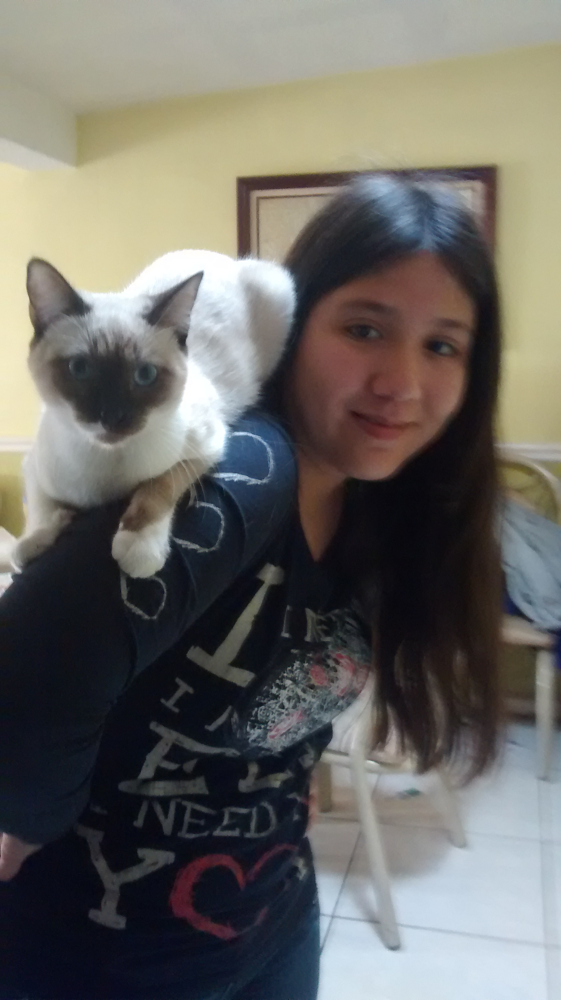

Biografía
Mi nombre es Kenia Isabel Delgado Flores, tengo 19 años y nací el 5 de septiembre de 1996, soy estudiante universitaria en la UACh en la carrera de ingenieria de Software, mi familia consíste en un hermano mayor, una hermana menor y mis dos padres.
Mis hobbies son: Dibujar y pintar (ya sea de manera digital o tradicional), leer, tomar fotografías de mi gato y leer webcomics